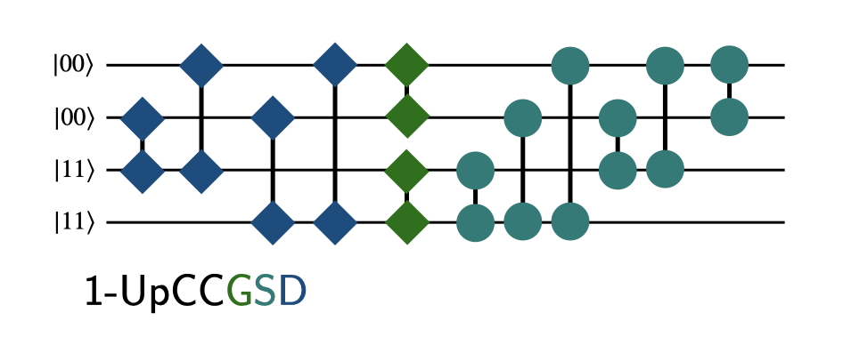
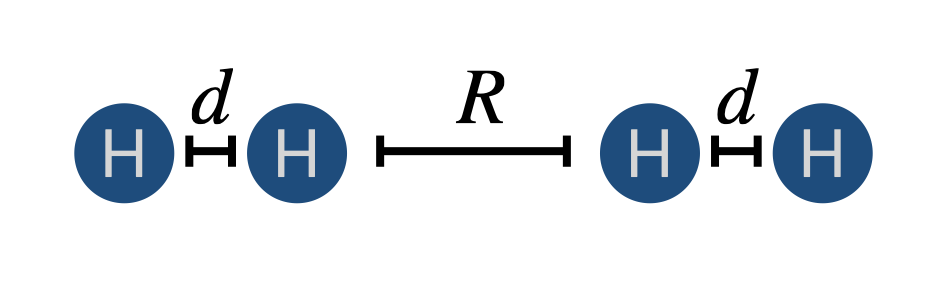
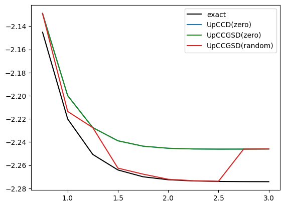

import tequila as tq
QCircuit = tq.QCircuitBasic VQE
We will showcase some basic circuit constructions within tequila via the UpCCGSD circuit class.
Note that you can create the circuits also via mol.make_ansatz(name="2-UpCCGSD") and similar for the other names.
We will use canonical Hartree-Fock (HF) orbitals in a closed-shell formulation, the terms occupied refer to those orbitals occupied in the HF reference, while virtual refers to the rest. The HF reference can be prepared via a simple circuit obtained from mol.prepare_reference.
Dependencies for the code in this tutorial
pip install tequila-basic
pip install pyscf
pip install qulacsEssential imports in the next cell:
The following figure illustrates the different circuits using a high-level representation: - each line is a spatial orbital - circles indicate single excitations (one operation includes spin-up and spin-down excitations) - squared indicate paired double excitations (two spin-paired electrons from one spatial orbital into the other)
The color code indicates what is created by the individual code blocks below.

The UpCCD circuit includes all paired double excitations from occupied to virtual orbitals
def UpCCD(m):
U = QCircuit()
# occupied HF reference orbitals
for i in reversed(range(0, m.n_electrons//2)):
# unoccupied HF reference orbitals
for a in range(m.n_electrons//2, m.n_orbitals):
U += m.UC(i,a)
return UThe next stage is the inclusion of the missing paired double excitations
def UpCCGD(m):
U = UpCCD(m)
for i in range(0,m.n_electrons//2):
for j in range(i+1,m.n_electrons//2):
U += m.UC(i,j)
for a in range(m.n_electrons//2, m.n_orbitals):
for b in range(a+1, m.n_orbitals):
U += m.UC(a,b)
return UFinally we add all possible single excitations
def UpCCGSD(m):
U = UpCCGD(m)
for k in range(0, m.n_orbitals):
for l in range(k+1, m.n_orbitals):
U += m.UR(k,l)
return UAs an example we compute the VQE energies of a \(H_4\) molecule with different bond distances. We illustrate UpCCD and UpCCGSD and use either random or fixed initial values. Initial values fixed to zero essentially start from the HF reference. You will see that this is not sufficient to find the best paramters for the UpCCGSD – however, random initialization is also not the practiable solution, as you usually need a few tries.
Our example looks like this

with a variable \(R\) and fixed \(d=0.75\) Angstroms.
d = 0.75
R = 0.5
data = {"exact":{}}
for _ in range(15):
R += 0.2
geom = "H 0.0 0.0 0.0\nH 0.0 0.0 0.75\nH 0.0 0.0 {}\nH 0.0 0.0 {}".format(d+R, d+R+d)
mol = tq.Molecule(geometry=geom, basis_set="sto-3g")
U0 = mol.prepare_reference()
H = mol.make_hamiltonian()
data["exact"][R]=mol.compute_energy("fci")
for circDesign in [UpCCD, UpCCGSD]:
name = str(circDesign.__name__)
U = U0 + circDesign(mol)
E = tq.ExpectationValue(U=U, H=H)
for iv in ["zero", "random"]:
xname = name+"("+str(iv)+")"
if xname not in data: data[xname]={}
result = tq.minimize(E, silent=True, initial_values=iv)
data[xname][R]=result.energyCode
from matplotlib import pyplot as plt
color = {"exact":"black", "UpCCD(zero)":"tab:blue", "UpCCGSD(zero)":"forestgreen", "UpCCGSD(random)":"tab:red"}
for name,d in data.items():
x = list(d.keys())
y = list(d.values())
if name in color:
plt.plot(x,y,label=name, color=color[name])
plt.legend()
plt.show()